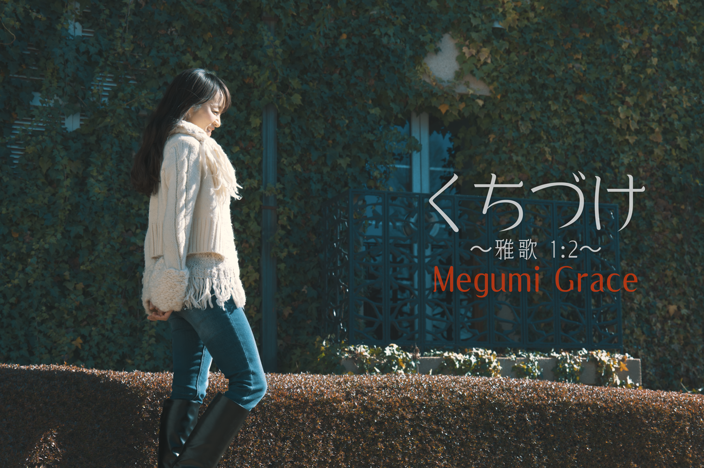

PROFILE

Megumi Grace
7月30日生まれ、東京都練馬区出身。 幼少よりクラシックバレエを習い、ジャズダンスやヒップホップにも親しむ。教会の聖歌隊に所属し、大学時代にはバンド活動を行う。 出産に伴いGenuine Graceでの活動を一時期縮小していたが、その間に子育てを通して得た新たな音楽表現として、ママ友聖歌隊への参加や、 "森のメグさん" としての一人芝居仕立ての子供向けコンサート、毎年夏にはJAZZコンサートを展開。 親子向け人気コンサートでは、子役のダンス指導兼ダンサーとして出演。ラジオパーソナリティとしても活躍中。
MUSIC
1st Single "くちづけ〜雅歌 1:2〜"
2026.01.01 Release
2nd Single "Air"
2026.05.15 Release
GALLERY
×

NEWS
- 2026.07.20全国ツアー2026 開催決定！